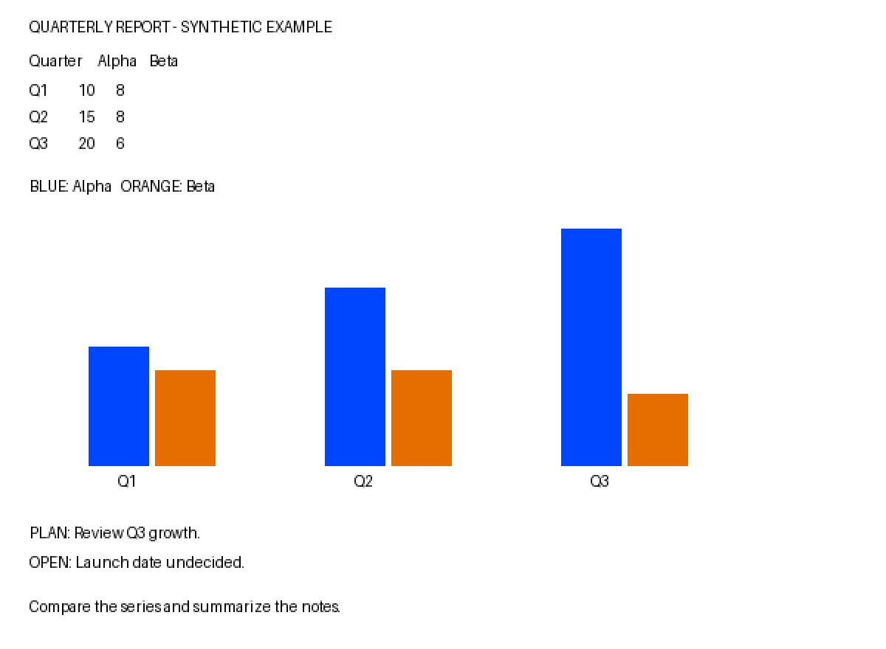

這三輪的時間
整輪從簽章事件送入宿主，計到處理返回，包含前置處理、驗證與模擬傳送；不包含手機收件。HTTP 是供應商 request 呼叫至返回的計時，不是純模型運算時間。三題內容不同，不用它們計算速度排名。
理解與操作，分清楚再路由
1 · 接收媒體圖片以實際像素送入；貼圖用本輪提供的中介資料。
2 · 互動模型理解在同一次原生 Gemini 呼叫讀圖、解讀或自然接話。
3 · 當輪直接回答本次三題皆選 direct，沒有建立或執行背景任務。
複雜圖表、文件截圖、OCR、梗圖含義，以及已知或未知貼圖的理解，都屬於互動工作。圖片生成、外部查證等另行要求的工具操作仍可以委派；讀不到輸入時應如實說明，不把缺少圖片當作盲目搜尋的理由。
這段說明是路由邊界，不是額外的測試結果。本次只量測以下三個案例。
M001 · primary · 單次取樣
複雜圖表與文件備註
模型收到的輸入

實際送入模型的正規化 JPEG，沒有重畫、放大美化或替換字體。點圖可看原始尺寸。本輪只有一張圖，沒有另外輸入文字；比較數據與摘要備註的要求就在圖片底部。
輸入檔案與 SHA-256
1200 × 880 · 41,015 bytes · image/jpeg
1fb239b3559c8b4e49d40e73fa867ba27715f8244f3ae21f5ac0754dd4900edc實際模型回覆
文字逐字保留；由模擬 LINE 傳輸捕捉。
幫你整理這份季度圖表的數據比較與備註摘要：
一、 Alpha 與 Beta 數據比較
- Alpha（藍色長條）：呈現持續成長趨勢。Q1 為 10，Q2 上升到 15（增加 50%），Q3 進一步增加到 20（比 Q1 翻倍）。
- Beta（橘色長條）：走勢持平後略降。Q1 與 Q2 皆維持在 8，Q3 則微幅下滑至 6。
- 整體對比：Alpha 在三個季度均高於 Beta，且差距從 Q1 的 2 逐漸擴大到 Q3 的 14。
二、 備註摘要
- 計畫事項（PLAN）：檢視 Q3 的成長情況（Review Q3 growth）。
- 待決議事項（OPEN）：上線日期尚未決定（Launch date undecided）。
4.446 s 整輪 · 3.891 s 供應商 HTTP
1 次原生 Gemini HTTP 200 · 0 個背景任務 · 0 次委派執行
模型保留的圖片觀察與 OCR
{
"description": "圖表標題為 QUARTERLY REPORT - SYNTHETIC EXAMPLE。左上方有一組簡短數據表格，列出 Q1 至 Q3 的 Alpha 與 Beta 數值。下方有三組並排長條圖，藍色代表 Alpha，橘色代表 Beta，分別呈現 Q1、Q2、Q3 的變化趨勢。長條圖下方列有 PLAN 與 OPEN 兩項備註，底端有一行提示文字說明比較序列與摘要備註。",
"readable_text": "QUARTERLY REPORT - SYNTHETIC EXAMPLE\nQuarter Alpha Beta\nQ1 10 8\nQ2 15 8\nQ3 20 6\nBLUE: Alpha ORANGE: Beta\nQ1 Q2 Q3\nPLAN: Review Q3 growth.\nOPEN: Launch date undecided.\nCompare the series and summarize the notes.",
"uncertainty": "圖表無垂直座標軸與刻度線，數值依左上方表格文字標示。",
"version": 1
}逐題閱讀紀錄
- Alpha 的 10 → 15 → 20、Q2 成長 50% 與 Q1 到 Q3 翻倍均正確。
- Beta 的 8 → 8 → 6、先持平再下降均正確；兩組差距由 2 擴大到 14 也正確。
- 正確保留「檢視 Q3 成長」與「上線日期尚未決定」，沒有把待辦說成完成。
開發代理依合成輸入逐項閱讀；不是獨立人工盲評或品質分數。
M002 · secondary · 單次取樣
已知貼圖：慶祝
模型收到的輸入
沒有下載或提供貼圖圖片、動畫、聲音；沒有另外輸入文字。畫面不放示意貼圖，避免誤認成模型看過的內容。
實際模型回覆
文字逐字保留；由模擬 LINE 傳輸捕捉。
耶！一大早就這麼有活力慶祝，是有什麼好事發生嗎？
2.231 s 整輪 · 1.551 s 供應商 HTTP
1 次原生 Gemini HTTP 200 · 0 個背景任務 · 0 次委派執行
逐題閱讀紀錄
- 接話的慶祝含義有目錄提示支持；沒有宣稱取得貼圖像素、動畫或聲音。
- 這是依已提供描述自然回應，不是對貼圖影像重新辨識。
開發代理依合成輸入逐項閱讀；不是獨立人工盲評或品質分數。
M003 · secondary · 單次取樣
未知貼圖：沒有描述提示
模型收到的輸入
沒有下載或提供貼圖圖片、動畫、聲音；沒有另外輸入文字。畫面不放示意貼圖，避免誤認成模型看過的內容。
實際模型回覆
文字逐字保留；由模擬 LINE 傳輸捕捉。
早安！今天這麼早起，有什麼想聊的嗎？
1.919 s 整輪 · 1.408 s 供應商 HTTP
1 次原生 Gemini HTTP 200 · 0 個背景任務 · 0 次委派執行
逐題閱讀紀錄
- 沒有編造貼圖角色、表情、動作或聲音；採用一般打招呼。
- 「早起」是由早晨時間推測的聊天用語；輸入並不能證明使用者何時起床。此瑕疵保留，不美化原始回答。
開發代理依合成輸入逐項閱讀；不是獨立人工盲評或品質分數。
獨立驗證 · 模擬供應商與 LINE
Queue isolation：前一輪還在等，後一輪能回答嗎？
兩個帳號各先建立 10 筆已接受的合成歷史，再同時卡住一個較早的一般模型請求與一個委派工作。接著送進新的文字、貼圖與圖片，檢查它們能否先完成回覆。
6 / 6 已接受較晚回覆 各帳號的三個回覆都獲接受時，該帳號較早的兩項等待仍未放行。
透過實際發布快照的載入器執行。這裡驗證的是模擬 LINE 已接受回覆，不只是模型開始處理；沒有跨帳號傳送或前景錯誤。
此區的供應商與 LINE 都是模擬，和上方三個真實 Gemini 呼叫分開。它能驗證前後回合不互相卡住的路徑，不能當作模型速度或正式服務 SLA。
離線接受時間與限制
- primary · 文字：4.396 s
- primary · 貼圖：4.373 s
- primary · 圖片：4.877 s
- secondary · 文字：4.239 s
- secondary · 貼圖：3.457 s
- secondary · 圖片：3.948 s
時間包含合成資料、SQL 追蹤及檔案稽核成本；不是手機端延遲，也不拿來和上方模型呼叫比較。
凍結程式碼 651e09c27ea948af106a9a057906e43c0d485fcb · 下載去除本機資訊的驗證結果
量測範圍與可下載資料
依序執行三題，每題一次，沒有重試或擇優。公開資料保留人工撰寫的輸入、原始回覆、路由、逐題時間和閱讀紀錄；不包含私人聊天、系統提示、憑證或本機路徑。
本次回執記錄原生 Gemini API 呼叫，但未保存精確模型版本；不從其他分頁的設定推定版本。這是路由與答案的冒煙測試，不是獨立品質評鑑、統計延遲基準或正式上線狀態證明。
下載公開結果 JSON · 下載實際圖片輸入
凍結程式碼 acca8b3316627f2f06b10dcd1e26320737e0250b